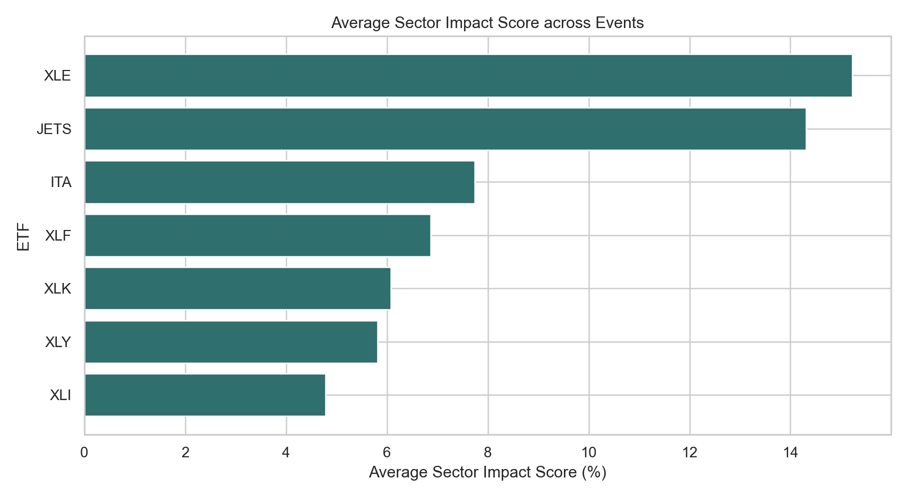
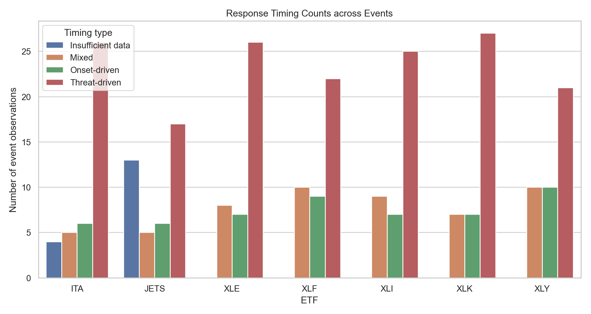
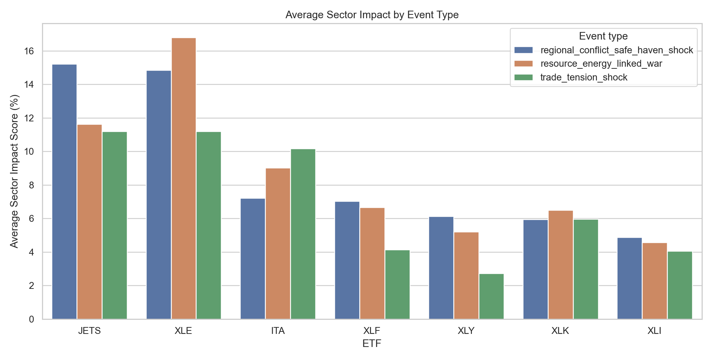
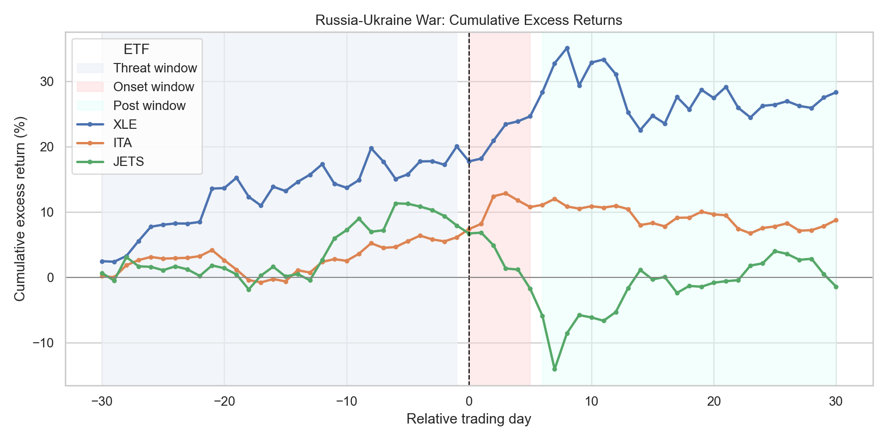
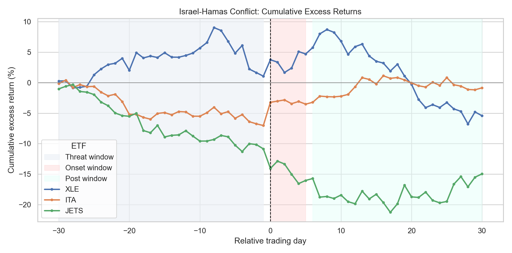

산업
어떤 산업이 지정학 리스크에 더 민감하게 반응하는가?
- XLE · JETS · ITA의 반복 반응 후보 확인
- 상승/하락보다 섹터 간 상대 민감도 비교
미국 섹터 ETF와 전달 변수 기반 모니터링 프레임워크
전체 지수보다 중요한 것은 산업별 민감도와 선반응 여부.
전쟁 · 분쟁 · 테러 · 무역 갈등: 시장 위험 인식 확대
산업별 방향과 강도의 차별 반응
전체 지수만으로는 취약/수혜 후보 분리 한계
사건 발생 후 무엇을 먼저 확인해야 하는가?
목표: 사건 해설이 아니라, 먼저 확인할 산업과 변수의 순서 정리.
분석 축은 산업 · 시점 · 변수.
어떤 산업이 지정학 리스크에 더 민감하게 반응하는가?
반응은 실제 발발일 이후에 나타나는가, 아니면 위협 단계에서 먼저 나타나는가?
사건 유형별로 어떤 시장 변수를 우선 확인해야 하는가?
섹터 ETF는 산업별 시장 반응을 관찰하기 위한 거래 proxy.
이 발표는 가격평가나 투자 추천이 아니라, 사건 전후 반응의 관찰 범위를 정리한다.
범위 밖: 가치평가 · 추천 · 수익 보장
거래 가능한 섹터 ETF를 proxy로 두고, 시장 대비 산업별 상대 반응을 비교한다.
분석 렌즈: SPY 대비 초과수익률
산업 ETF, 시장 기준, 전달 변수를 분리한 사건 전후 비교 구조.
| 구분 | 변수 | 역할 |
|---|---|---|
| 시장 기준 | SPY | 시장 전체 움직임 제거 |
| 산업 ETF | XLE, ITA, JETS 등 | 산업별 반응 비교 |
| 전달 변수 | Brent, Gold, Dollar, VIX | 충격 전달 경로 확인 |
| 사건 구간 | Threat, Onset, Post | 반응 시점 비교 |
사건 전후 세 구간의 누적 초과수익률 비교.
발발 전 가격 흔적과 긴장 고조 구간.
공개 직후 재가격화와 방향 전환.
반전, 지속, 과잉 반응의 조정 구간.
에너지와 항공은 지정학 이벤트 전후 반복 반응이 뚜렷한 관찰 축.

D0 이후보다 Threat 구간에서 먼저 잡힌 움직임이 더 많은 구조.

에너지 연계 전쟁과 지역 분쟁은 서로 다른 산업·전달 변수 조합.

자원·에너지 노출이 큰 사건에서 XLE와 Brent가 먼저 움직이는 축.

지역 분쟁에서는 항공 취약성과 안전자산 선호가 함께 나타나는 구조.

사건 성격을 먼저 나누고, 산업·전달 변수·가격 반응을 같은 순서로 압축.
VAR/Granger, OLS, Sobel은 Event Study 결과를 보강하는 검산 파트.
섹터 ETF를 직접 예측하는 핵심 근거가 아니라 방향성 점검용.
따라서 GPR 조기경보 모델이 아니라 Event Study 결과의 보조 검산으로 둔다.
사례 해석에 필요한 전달 변수 축을 보조적으로 점검.
에너지·항공 사례에서 어떤 변수를 먼저 볼지 정하는 근거로 활용한다.
전달 변수를 완전한 매개 경로로 단정하기에는 통계 근거 부족.
전달 변수는 설명 축이지, 모든 사건을 관통하는 단일 원인으로 제시하지 않는다.
핵심 결론이 아니라 Event Study 결과의 방어력 보강.
짧은 이벤트 윈도우 결과가 우연인지, 장기 반응과 충돌하는지 확인한다.
ETF proxy와 이벤트 표본 제약을 전제로 한 산업별 반응 관찰.
결론은 인과 증명이 아니라, 거래 가능한 proxy에서 관찰된 상대 반응이다.
다음 단계는 proxy 검증, 표본 확대, 실시간 신호 결합으로 신뢰도를 높이는 것이다.
예측 모델보다 사건 발생 후 먼저 볼 산업과 전달 변수를 정리한 분석 프레임.